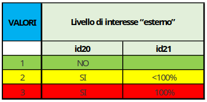
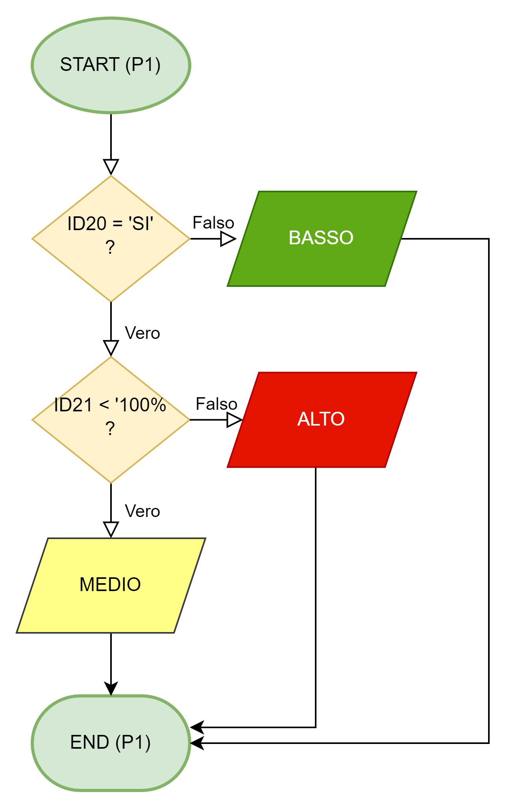
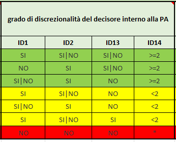
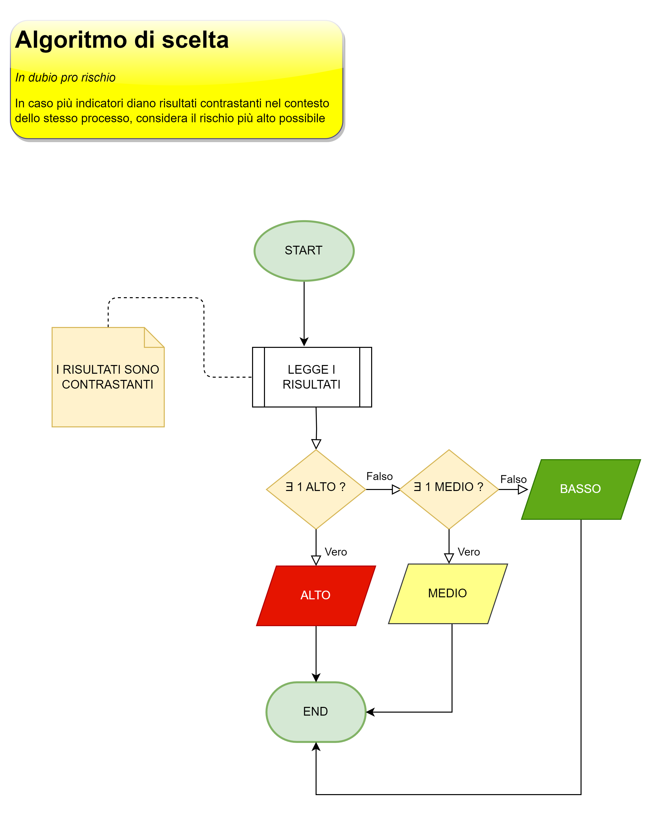

Lo scopo finale dell’intervista su un processo - cioè della raccolta delle risposte date dal personale di una struttura a quesiti declinati su uno specifico processo - è quello di ottenere un indice sintetico che esprima il rischio corruttivo cui tale processo è esposto. Questo indice sintetico si chiama “pi per i” (P x I), talvolta detto, per estensione, “giudizio sintetico” (in realtà il “giudizio sintetico” dovrebbe includere, in [ROL], anche una motivazione testuale).
Tale indice sintetico è una sintesi di vari indici intermedi che concorrono a tale valore complessivo.
Questi indici intermedi vengono calcolati come misure di rispettivi indicatori di rischio, i quali dipendono a loro volta da un sottoinsieme dei quesiti.
Riepilogando:
vari sottoinsiemi di quesiti concorrono al valore di altrettanti indicatori.
Il valore di ogni indicatore è funzione dalle risposte che sono state date ai quesiti corrispondenti nel contesto di una o più interviste.
I valori degli indicatori concorrono al valore finale, o generale, del livello di rischio cui è esposto un determinato processo (P x I).
Esistono due tipologie di indicatori:
indicatori di probabilità (P)
indicatori di impatto (I)
I primi fanno riferimento a quanto è probabile che l’evento dannoso si verifichi mentre i secondi fanno riferimento a quanto è grave l’evento dannoso se si verifica.
Il giudizio sintetico incrocia questi due valori (P x I).
Per poter calcolare gli indici intermedi, bisogna controllare il valore ottenuto dalle risposte a specifici quesiti; ogni indicatore si basa su un insieme di quesiti specifico e diverso da quello di ogni altro indicatore. A seconda del numero di quesiti coinvolti e dalla tipologia di riposte, si ottiene un algoritmo di calcolo specifico per ciascun indicatore.
A titolo di esempio viene riportato, in pseudolinguaggio, l’algoritmo di calcolo del primo indicatore di probabilità (P1):
Se la risposta al quesito con ID 20 è negativa, il rischio è basso.
Altrimenti, se essa è positiva, bisogna controllare la risposta al quesito 21;
Se il valore di tale risposta è inferiore al 100%, allora il rischio è medio,
Altrimenti, se è 100% il rischio diventa alto.


Alcuni algoritmi sono più complessi da calcolare (e quindi implementare) che altri.
Di seguito viene mostrata la tabella che permette di determinare i livelli di rischio dell’indicatore P4

I casi mappati per l’indicatore P4 (test effettuati sull’implementazione dell’algoritmo) sono riportati nella tabella seguente:
ID1 ID2 ID13 ID14 RESULT
disposizioni 1a riga
SI SI SI >=2 BASSO
SI SI NO >=2 BASSO
SI NO SI >=2 BASSO
SI NO NO >=2 BASSO
disposizioni 2a riga
NO SI SI >=2 BASSO
NO SI NO >=2 BASSO
disposizioni 3a riga
SI SI NO >=2 BASSO
NO SI NO >=2 rientra nelle combinazioni 2a riga (BASSO)
disposizioni indecidibili
NO NO SI >=2 NON DETERMINABILE
disposizioni 4a riga
SI SI NO <2 MEDIO
SI NO NO <2 MEDIO
disposizioni 5a riga
SI SI NO <2 rientra nelle combinazioni 4a riga (MEDIO)
NO SI NO <2 MEDIO
disposizioni 6a riga
SI SI SI <2 MEDIO
SI NO SI <2 MEDIO
disposizioni 7a riga
NO NO NO * ALTO
A livello di implementazione, la procedura per il calcolo è la seguente:
per ogni indicatore si estraggono i quesiti collegati;
nel contesto di un’intervista, si esaminano le risposte ai quesiti in base all’algoritmo di calcolo (valutando anche eventuali valori spuri, che non permettono di determinare il livello di rischio per l’indicatore considerato);
nel contesto di un processo, si esaminano i valori di rischio ottenuti per ciascuno dei 7 + 4 indicatori attraverso tutte le interviste che hanno coinvolto il processo stesso, adottando un approccio prudente (“in dubio pro peior”) in caso si siano ottenuti livelli di rischio contrastanti nello stesso indicatore in interviste differenti;
nel contesto di un processo, si ottengono quindi gli indici sintetici di P e di I e si applica uno specifico algoritmo per il calcolo del P x I.
Considerando che P ed I hanno ciascuno 3 valori possibili, matematicamente il calcolo degli incroci dei valori di P e dei valori di I è il calcolo delle disposizioni (con ripetizione) di 3 elementi presi a 2 a 2.
Definizione.
Dati n elementi distinti e un numero k<=n si dicono disposizioni con ripetizione di questi n elementi, presi a k a k (o di classe k), D’(n,k), tutti i gruppi che si possono formare con gli elementi dati, in modo che:
ogni gruppo contenga k elementi non necessariamente distinti
ogni elemento possa trovarsi ripetuto nel gruppo fino a k volte
due gruppi qualunque differiscano fra loro per qualche elemento oppure per l’ordine in cui gli elementi sono disposti
Esempi.
Le disposizioni con ripetizione di 3 elementi (abc) presi a 2 a 2 sono:
aa ab ac ba bb bc ca cb cc
Calcolo delle disposizioni con ripetizione.
D’(n,k) = nk
Nel nostro caso abbiamo 3 elementi (alto, medio, basso) presi a 2 a 2, da cui:
D’(3,2) = 32 = 9
Di seguito viene riportata la tabella di decisione dell’algoritmo per il calcolo del PxI, con i 9 valori possibili derivanti dalle disposizioni con ripetizione dei 3 valori possibili del P e dei 3 valori possibili di I.
| P | I | P x I |
|---|---|---|
| ALTO | ALTO | ALTISSIMO |
| ALTO | MEDIO | ALTO |
| ALTO | BASSO | MEDIO |
| MEDIO | ALTO | ALTO |
| MEDIO | MEDIO | MEDIO |
| MEDIO | BASSO | BASSO |
| BASSO | ALTO | MEDIO |
| BASSO | MEDIO | BASSO |
| BASSO | BASSO | MINIMO |
Siccome abbiamo visto che su uno stesso processo possono essere effettuate più interviste, come è possibile assumere che i risultati dei vari indicatori siano univoci per il singolo processo?
In base a quanto analizzato finora, siamo consapevoli che un processo potrebbe essere in carico a più strutture e ciò potrebbe portare a più interviste distinte che investigano lo stesso processo.
Ora, potrebbe accadere che in un’intervista relativa al processo 1 effettuata con la struttura A il valore di un indicatore, p.es. P1, risulti ALTO mentre in un’altra intervista, relativa sempre al processo 1, ma effettuata stavolta con la struttura B, il valore dell’indicatore P1 risulti MEDIO (o anche BASSO)…
Siccome questo può accadere – ed è perfettamente plausibile che accada – in questo caso, si adotta, come accennato in precedenza, l’algoritmo “In dubio pro peior” (nel dubbio si sceglie il caso peggiore, ovvero il valore di rischio più alto); quindi, nell’esempio, si considera che il valore complessivo di P1 per il processo 1 è ALTO (non si effettua una ponderazione ma si prende il valore di rischio più elevato).
Più sotto viene riportato il diagramma di flusso dell’algoritmo adottato in caso di risultati contrastanti per uno stesso processo attraverso varie interviste (risultati contrastanti da un’intervista all’altra).
